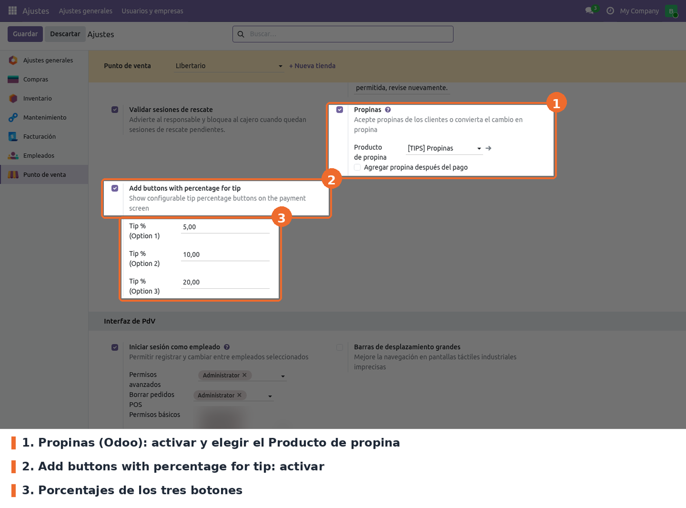
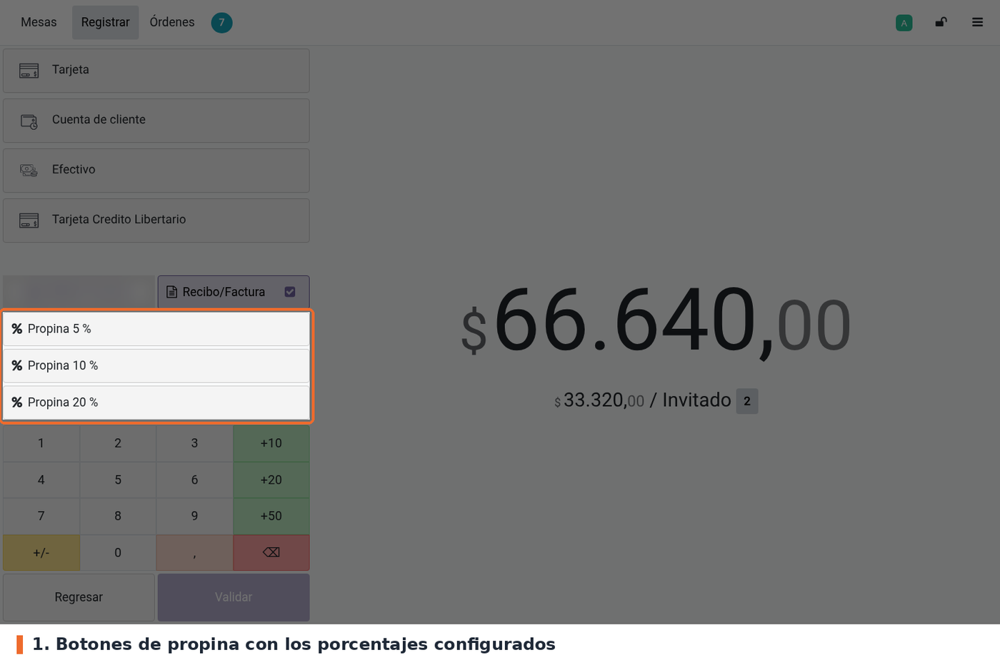
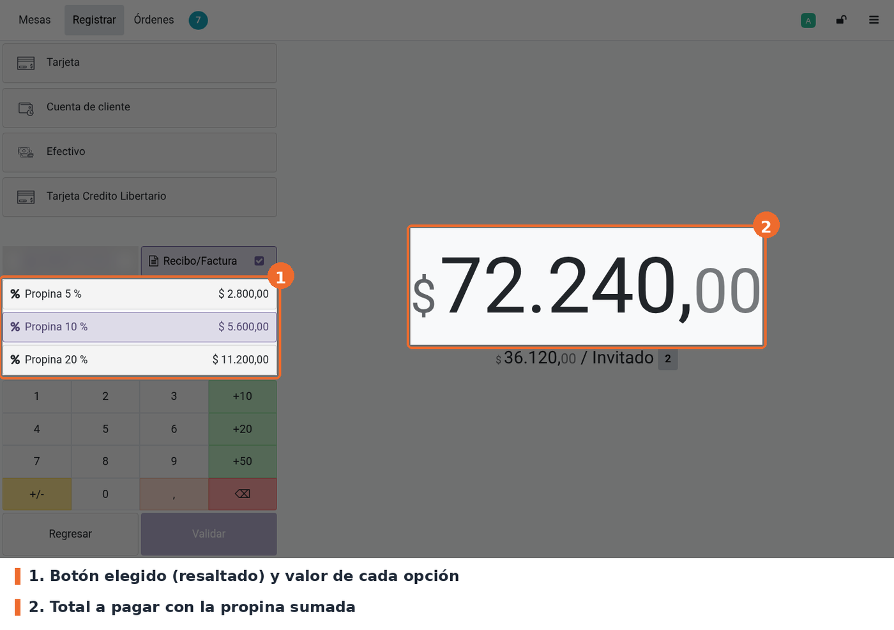
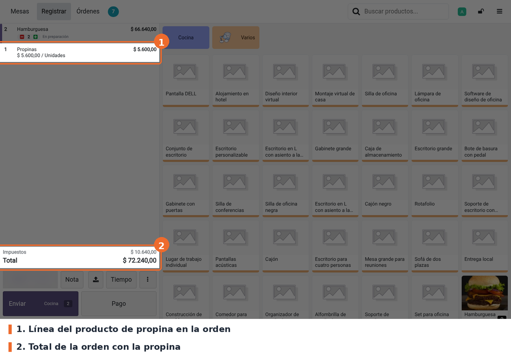
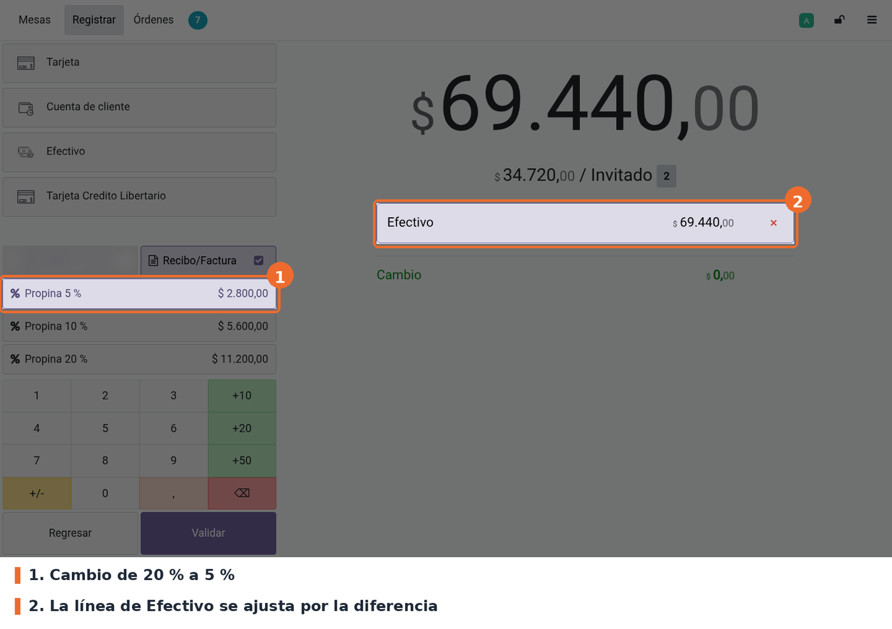

Reemplaza el botón Propina de la pantalla de Pago del Punto de Venta por hasta tres botones de porcentaje configurables por punto de venta (por ejemplo, 5 %, 10 % y 20 %). Al pulsar uno, el POS calcula la propina sobre el subtotal de la orden y la agrega como una línea del producto de propina, sin que el cajero tenga que hacer la cuenta ni escribir el valor.
Relación con Odoo 19: la propina es del núcleo (point_of_sale). Odoo trae un solo botón
Propina que abre un teclado para escribir el valor a mano. Este módulo no cambia cómo se guarda
la propina: usa el mismo producto de propina y el mismo método del núcleo (setTip), así que la
línea de propina y el total quedan igual que con el botón estándar.
Cómo se calcula, según el código (static/src/js/pos_payment.js):
Math.round). En pesos colombianos no se nota; en
una moneda con centavos, la propina pierde los decimales.point_of_sale (Odoo 19 Community). No hay otras dependencias ni librerías de Python adicionales.Instalar POS Tip Percentage desde Aplicaciones. El módulo agrega cuatro campos a la configuración del punto de venta, un ajuste en Punto de venta › Configuración › Ajustes y un archivo JavaScript y una plantilla al POS. No crea menús, modelos ni permisos. Después de instalar o actualizar, volver a entrar al POS desde el backend para que cargue los archivos nuevos.
pos.config (iface_tippercent, tip_percent1,
tip_percent2, tip_percent3), así que los porcentajes configurados en la 17 se mantienen sin
script de datos.pos.tip que ya no se usaba: un controlador /pos/tip/name y una
línea de permisos. En la 19 se quitaron; el modelo ya estaba comentado en la 17.Ir a Punto de venta › Configuración › Ajustes, elegir el punto de venta en la parte superior y buscar el bloque Pago. El ajuste del módulo está justo después del ajuste Propinas de Odoo.

Punto de venta › Configuración › Ajustes › Pago: Propinas de Odoo y botones de porcentaje del módulo
iface_tipproduct). Obligatorio. Sin él no se ve el ajuste del módulo.
Al activarlo, Odoo propone el Producto de propina (tip_product_id); en esta base es
[TIPS] Propinas. El módulo usa ese producto para la línea de propina.iface_tippercent de pos.config). Obligatorio
para que el módulo actúe; desmarcado por defecto. Al marcarlo aparecen los tres porcentajes.tip_percent1, tip_percent2 y
tip_percent3). Opcionales; 0 por defecto. Cada porcentaje distinto de 0 es un botón en la
pantalla de pago. Un porcentaje en 0 no muestra botón.A tener en cuenta:
En el POS, cargar la orden y pulsar Pago. Debajo de los métodos de pago aparecen los botones Propina N %, uno por cada porcentaje configurado.

Pantalla de pago con los tres botones de porcentaje
Pulsar el porcentaje que pide el cliente. El POS agrega la propina a la orden y el total a pagar sube en ese valor. El botón elegido queda resaltado y, desde ese momento, cada botón muestra cuánto sería la propina con su porcentaje, para comparar antes de cambiar.

Propina del 10 % aplicada: botón resaltado, valor de cada opción y total con propina
Después se elige el método de pago y se valida como siempre. La propina es una línea más de la orden, con el producto de propina, y se ve al volver a la pantalla de productos con Regresar.

Orden con la línea del producto de propina y el total actualizado

Cambio de 20 % a 5 % con una línea de efectivo cargada: la línea se ajusta sola
Math.round quita los decimales de la propina. Correcto para pesos
colombianos; en una moneda con centavos no lo sería.static/description/icon.png: en Aplicaciones se ve el ícono genérico de Odoo.models/pos_order.py: pese al nombre, hereda pos.config y agrega iface_tippercent,
tip_percent1, tip_percent2 y tip_percent3.models/res_config_settings.py: los campos relacionados en Ajustes, con prefijo pos_ porque
res.config.settings es compartido por todos los módulos.views/pos_order.xml: el ajuste, insertado después de setting[@id='iface_tipproduct'] y
visible solo con Propinas activado.static/src/xml/pos_payment.xml: hereda point_of_sale.PaymentScreenButtons y reemplaza el
botón addTip por los botones de porcentaje (o por un botón Propina equivalente al estándar si
los tres porcentajes están en 0).static/src/js/pos_payment.js: parche de PaymentScreen con addTip1..3, getTipX
(cálculo), shouldHighlight (resaltado) y addTipPercent, que llama a this.pos.setTip() del
núcleo y ajusta la línea de pago seleccionada.pos.config no define _load_pos_data_fields y el
POS lee todos sus campos.//button[@t-on-click='addTip'] en
PaymentScreenButtons. Si Odoo cambia ese botón, la herencia falla al cargar el POS.order.priceIncl, order.amountTaxes, order.getTip(),
pos.setTip(), paymentLine.isElectronic(), getPaymentStatus(), getAmount() y
setAmount(). En la 17 se llamaban get_total_with_tax, get_total_tax, get_tip y
set_tip.addTip: ajusta la
línea de pago seleccionada por la diferencia. El valor de la propina calculado es el mismo.getTip() devuelve la propina sin impuestos; la base resta la propina sin impuestos del subtotal.
Si el producto de propina tuviera impuestos, el cálculo seguiría siendo sobre la base sin
impuestos de los demás productos.